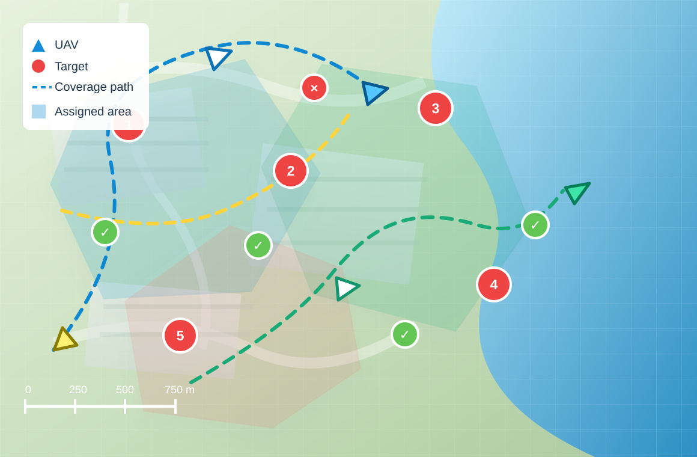
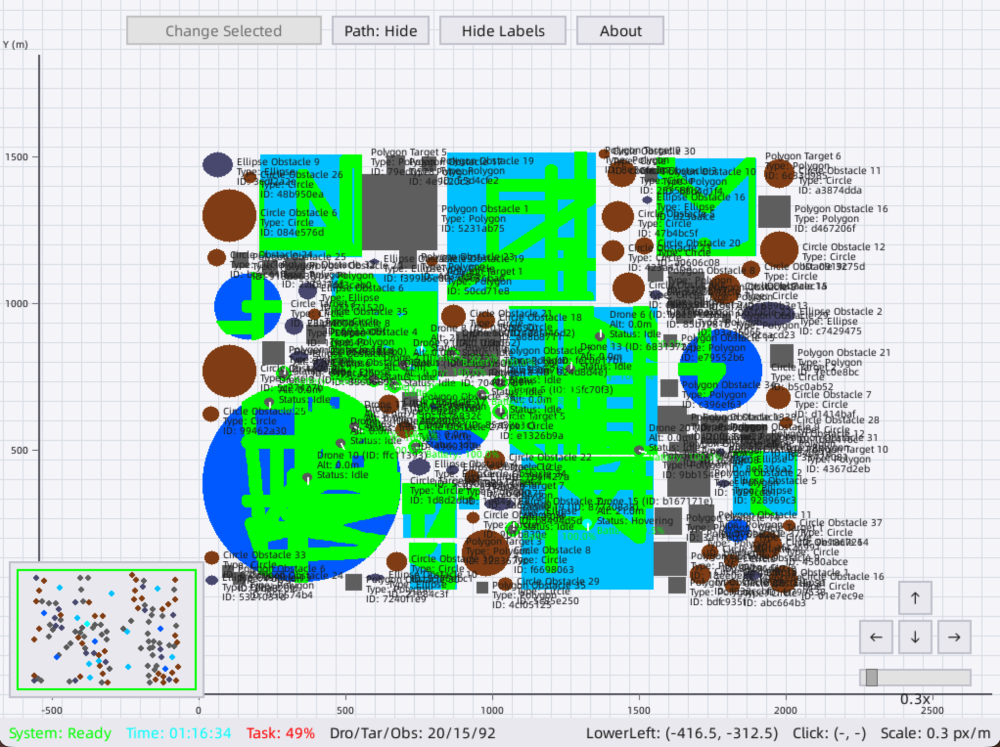
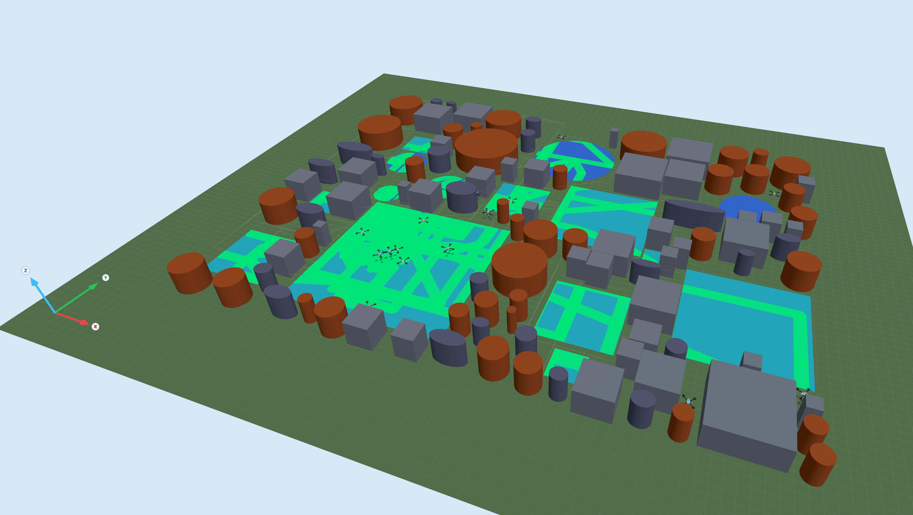
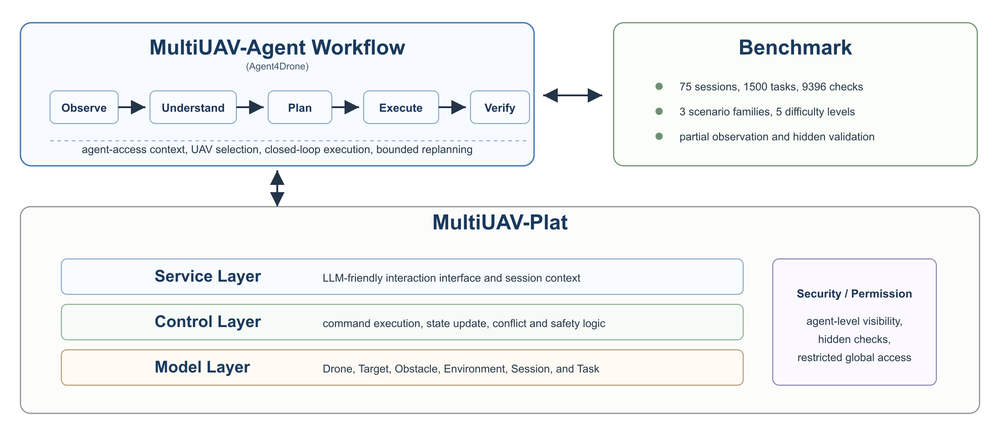
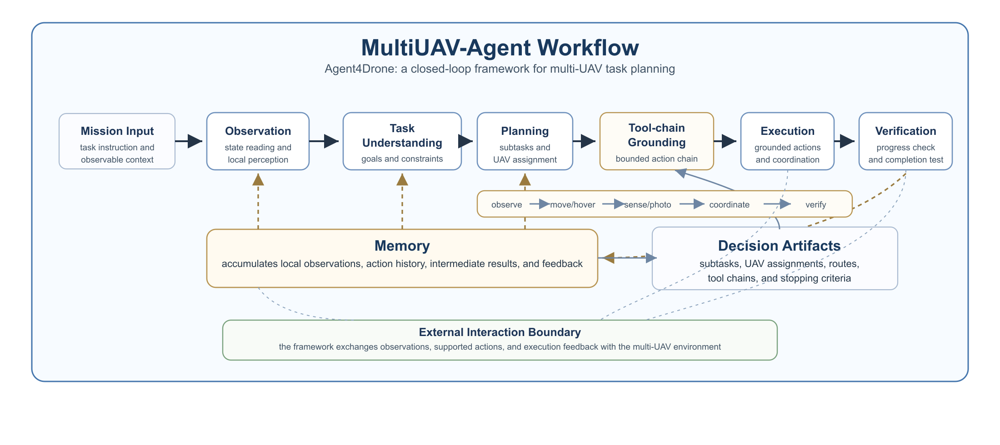

Restricted API interaction
Agents use observation, takeoff, landing, waypoint navigation, sensing, photography, communication, and verification endpoints instead of privileged simulator state.
Paper · Platform · Benchmark · Framework
A lightweight simulation platform and reproducible benchmark for studying LLM agents that plan, act, observe, and verify multi-UAV missions through restricted APIs and partial local perception.

Downloads
Download platform installers for Windows, macOS, and Ubuntu, together with the benchmark package used for reproducible evaluation. Packages are distributed through GitHub Releases.
Platform
MultiUAV-Plat exposes mission-level UAV actions through concise RESTful APIs, while preserving realistic constraints such as role-based visibility, partial observations, environment feedback, and optional 2D/3D visualization.
Agents use observation, takeoff, landing, waypoint navigation, sensing, photography, communication, and verification endpoints instead of privileged simulator state.
Each active agent receives task descriptions, UAV status, command feedback, and local perception without access to hidden validator specifications.
Synchronized 2D and 3D views make mission state, UAV movement, obstacles, targets, and execution progress easier to inspect.


Benchmark
The benchmark evaluates whether agents can interpret natural-language objectives, choose UAVs, collect missing information, execute valid actions, coordinate multiple vehicles, and satisfy hidden mission-level checks.
Target Assignment, Area Search, and Area Assignment and Patrol.
Easy, Intermediate, Moderate, Hard, and Extreme mission settings.
Hidden checks score task completion and partial progress across movement, sensing, target, area, and coordination conditions.

Framework
The workflow keeps the agent focused on mission-level reasoning: observe, understand, remember, plan, execute, verify, and replan when feedback shows a gap.

Leaderboard
The leaderboard is maintained under the unified benchmark protocol. Researchers can report new evaluation results through the Submit Results entry.
| Rank | Method | LLM Backend | Task Pass | Avg. Check | Global Check | Total Failed | Date | Paper | Code | Notes |
|---|
* The Agent4Drone + deepseek-v4-pro full benchmark run cost approximately $60 across more than 35K API requests, with roughly 15M output tokens, 90M cache-miss input tokens, and 2B cache-hit input tokens, based on the API usage records reported in the paper.
Resources
If you find this paper useful in your research, please consider citing it. If you use or refer to our platform, benchmark, or workflow framework, please cite our paper.
@article{zhang2026multiuavplat,
title = {MultiUAV-Plat: An LLM-Oriented Platform, Benchmark and Framework for Multi-UAV Collaborative Task Planning},
author = {Zhang, Sheng and Li, Qinglin and Zang, Yuechao and Huang, Xueqin and Fu, Yijia and Zhu, Cheng},
journal = {arXiv preprint},
year = {2026}
}